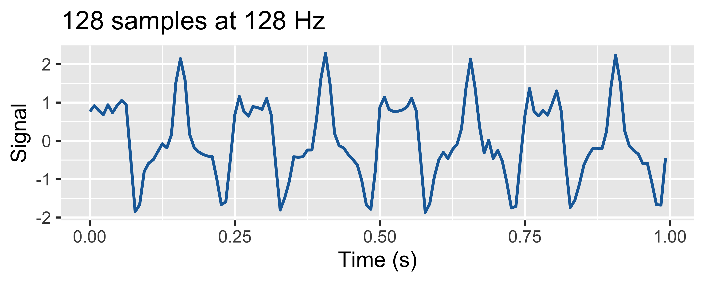

Frequency-domain analysis of time series
Multi-agent system for smart machining, part II
Recursive DFT
The Recursive DFT is an efficient algorithm for computing the DFT of a signal in real-time. It allows for the continuous analysis of a signal as new data arrives without needing to wait for a full block of data. The recursive DFT is defined as: \[X_k(n) = X_k(n-1) + x(n) - x(n-N)\] where:
- \(X_k(n)\) is the DFT coefficient at time \(n\) for frequency bin \(k\)
- \(x(n)\) is the input signal at time \(n\)
- \(N\) is the length of the DFT
Fast implementation of the Recursive DFT: SlidingDFT
This can be used in C, C++ and Python:
Goertzel algorithm
The Goertzel algorithm is a computationally efficient method for calculating specific DFT coefficients, particularly useful for applications like tone detection in telephony. It is defined as: \[s(n) = x(n) + 2 \cos\left(\frac{2\pi k}{N}\right) s(n-1) - s(n-2)\]
- \(x(n)\) is the input signal at time \(n\)
- \(s(n)\) is the state variable at time \(n\)
- \(k\) is the index of the frequency bin being analyzed
- \(N\) is the length of the DFT
Goertzel library
This can be used in C, C++, Python, and R:
Tip
The Goertzel algorithm is particularly efficient for calculating a small number of DFT coefficients, as it avoids the need to compute the entire DFT. It is commonly used in applications such as DTMF tone detection, where only specific frequencies need to be analyzed.